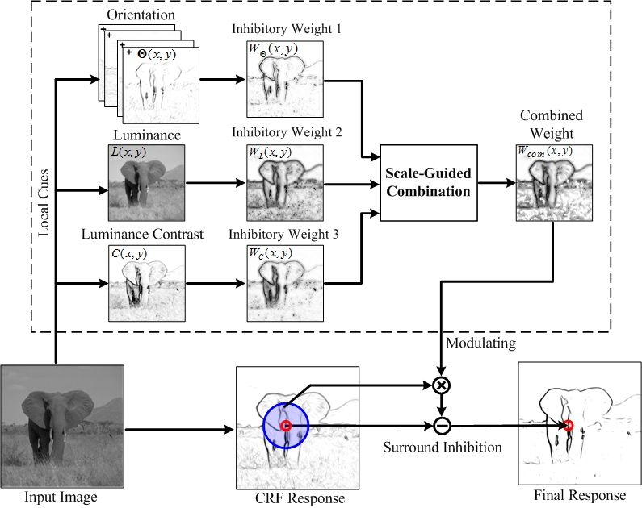
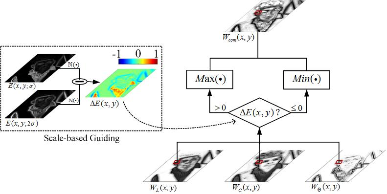
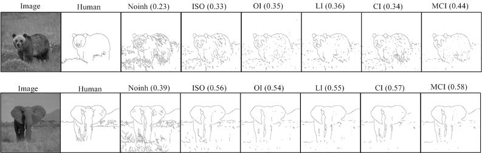
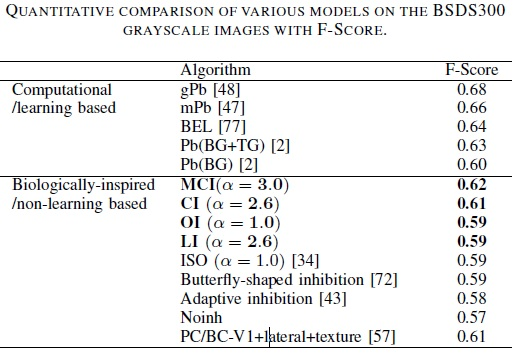

Multifeature-based Surround Inhibition Improves Contour Detection in Natural ImagesKai-Fu Yang, Chao-Yi Li, Yong-Jie Li*
University of Electronic Science and Technology of China Shanghai Institutes for Biological Sciences, CAS |
|
|
AbstractTo effectively perform visual tasks like detecting contours, the visual system normally needs to integrate multiple visual features. Sufficient physiological studies have revealed that for a large number of neurons in the primary visual cortex (V1) of monkeys and cats, neuronal responses elicited by the stimuli placed within the classical receptive field (CRF) are substantially modulated, normally inhibited, when difference exists between the CRF and its surround, namely, non-classical receptive field (non-CRF), for various local features. The exquisite sensitivity of V1 neurons to the center-surround stimulus configuration is thought to serve important perceptual functions including contour detection. In this work, we propose a biologically motivated model to improve the performance of perceptually salient contour detection. The main contribution is the multifeature-based center-surround framework, in which the surround inhibition weights of individual features, including orientation, luminance and luminance contrast, are combined according to a scale-guided strategy, and the combined weights are then used to modulate the final surround inhibition of the neurons. The performance was compared with that of single-cue-based models and other existing methods (especially other biologically motivated ones). The results show that combining multiple cues can substantially improve the performance of contour detection compared to the models using single cue. In general, luminance and luminance contrast contribute much more than orientation to the specific task of contour extraction, at least in grey-scale natural images. |
||
MethodThe general framework of the proposed model.
 The flowchart of multiple feature based computation of surround inhibition weights. |
||
Results Results of various models on two example images from RuG40 dataset. The number on the top of each image indexes its performance (P value).  |
||
Citation & Download:
Reference:
|
||
|
Back to ViCBiC Projects Page |
|
latest update： 06-Oct-2014 |